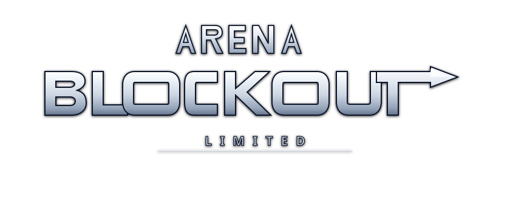

CARREGANDO MAPA...
INICIALIZANDO MOTOR...
0%
VOCÊ FOI ELIMINADO
reaparecendo em 3...
FIM DE RODADA
0 abates · 0 mortes
JOGAR DE NOVO
🎒 INVENTÁRIO TÁTICO & MOCHILA
PESO: 9.60 kg / 40.0 kg
Equipamento Operacional
ARMA PRIMÁRIA
HK416
ARMA SECUNDÁRIA
P-9
COLETE BALÍSTICO
Classe 3 (50/50 HP)
CAPACETE MILITAR
Classe 2 (30/30 HP)
MOCHILA TÁTICA
Patrulha 4x4 (16 Slots)
Mochila & Suprimentos (Clique para usar)
R
GUARDAR NO BOLSO
3:30
K
0
D
0
WASD
mover ·
Shift
correr ·
C
agachar ·
Space
pular
LMB
atirar ·
RMB
mira ·
R
recarga (tap/hold)
Q
/
E
inclinar ·
F
interagir ·
1
/
2
armas ·
B
modo ·
I
mochila ·
U
smoke
HP
100
OPTIC
1.0x
75°
[1] HK416
[2] VAZIO
HK416
AUTO
30
/
30
[1/2] SLOTS · [B] MODO
🚫
×
[F] INTERAGIR
TIRO
TIRO
TIRO
MIRA
ZOOM
PULO
AGACHA
RELOAD
SMOKE
ARMA
MODO
INTERAGIR
⏸
GIRE O APARELHO
Para jogar no celular, use o smartphone na horizontal (Landscape).
WASD mover · Shift correr · C agachar · Space pular
LMB atirar · RMB mirar · R reload · B modo tiro · Q/E inclinar · U smoke · F interagir
ESC pausa
🔫 LOADOUT
🎮 PARTIDA
🎨 TEXTURAS
🎯 MIRA
🔊 ÁUDIO
⚙️ AJUSTES
PRIMÁRIA: HK416
[1] PRI
[2] SEC
[👤] OPERADOR
🔄 GIRAR
✋ MOVER
⟳ AUTO
↺ RESET
SLOT 2 VAZIO — SELECIONE UMA ARMA SECUNDÁRIA
Arma Primária (Slot 1)
HK416 (Fuzil 5.56)
AK-47 (Fuzil 7.62 Soviético)
UZI (Micro-SMG 9mm)
M249 SAW (LMG 100 Tiros)
P-9 (Pistola Tática)
S&W 500 Magnum (Canhão 1-Hit Kill)
Winchester M12 (Trench Shotgun Cal. 12)
VSS Vintorez (Subsonic 9x39mm Sniper)
FN SCAR-H (Mk 17 7.62 NATO)
Arma Secundária (Slot 2)
Nenhuma (Vazio)
P-9 (Pistola Tática)
HK416 (Fuzil 5.56)
AK-47 (Fuzil 7.62 Soviético)
UZI (Micro-SMG 9mm)
M249 SAW (LMG 100 Tiros)
S&W 500 Magnum (Canhão 1-Hit Kill)
Winchester M12 (Trench Shotgun Cal. 12)
VSS Vintorez (Subsonic 9x39mm Sniper)
FN SCAR-H (Mk 17 7.62 NATO)
🪖 SKIN DO OPERADOR (CHARACTER)
👁️ VER NO 3D
Camuflagem / Paleta
🌲 Woodland Green (Florestal Padrão)
🏙️ Urban Slate (Cinza SWAT)
🏜️ Desert Coyote (Areia do Deserto)
🌑 Spec-Ops Dark (Preto Furtivo)
🍂 Mercenary Camo (Forças Terrestres)
❄️ Arctic Snow (Branco Neve)
🩸 Crimson Ops (Vermelho Tático)
⚓ Navy Seal (Azul Noturno)
🧪 Toxic Hazard (Amarelo Ocre)
🛠️ Personalizado (Custom)
🌲 Floresta
🏙️ SWAT
🏜️ Deserto
🌑 Furtivo
🍂 Mercenário
❄️ Neve
🩸 Crimson
⚓ Navy
🧪 Tóxico
👕 Farda
#3A4833
🦺 Colete
#303C2A
🥾 Proteções
#161816
🧑 Pele
#C4987E
Tipo de Inimigos
Soldados Blocky
Fantasmas Pac-Man
Mapa
Favela (Labirinto & Vielas 150x150)
Dust Block (Mirage Dunes Remake)
Lisboa — Bairro Alto & Baixa (300x300)
CS Italy (Mapa Teste de Texturas)
Vila Ensolarada (Casas & Árvores)
Woods 300x300 (Bosque & Colinas)
Vice City 2000x2000 (Afronta GTA 6)
Cidade Abandonada 1000x1000
Vertigo Skyscraper
Campo de Tiro (Range)
Cargo (Assault & Train)
Grid (Calibration Lab)
Inimigos (Bots)
4
Duração da Partida
3:30
Modo de Renderização
PBR Procedural (Albedo + Relevo Bump + Roughness)
Albedo Puro (Sem Relevo)
Cores Sólidas (Estilo Blocky Antigo)
Intensidade do Relevo (Bump)
0.05
Escala de Repetição UV (World-Space)
0.40x
TESTAR IMAGEM EXTERNA (PNG / JPG / BITMAP)
Chão de Selva / Húmus (Woods)
Rocha com Musgo (Woods)
Sacos de Areia / Bunker (Woods)
Lona Camuflada (Woods)
Areia das Dunas (Dust)
Arenito do Deserto (Dust)
Chão / Cobblestones (Italy)
Parede Ocre Descascada
Parede Terracota
Parede Branca Envelhecida
Telhas de Terracota
Porta de Madeira
Caixotes de Vinho / Madeira
Toldo Listrado
📂 CARREGAR IMAGEM
🚫
PRÉVIA EM TEMPO REAL
Estilo da Mira
Clássico (Cruz Completa)
Formato T (CS2 T-Shape)
Oculta (Sem Mira de Quadril)
Comportamento de Dispersão
Dinâmica (Abre com movimento/spray)
Estática (Fixa sem variação)
Alinhamento Dinâmico (Cano 3D)
Ativado (Mostra Onde o Cano Aponta)
Desativado (Fixo no Centro da Câmera)
Seguir Recuo (Follow Recoil)
Desativado (Sem Subida de Spray)
Ativado (Rastreia Spray & Subida)
Ponto Central (Center Dot)
Desativado
Ativado
Comprimento (Length)
7px
Espessura (Thickness)
1.5px
Espaçamento Central (Gap)
5px
Contorno Escuro (Outline)
1px
Cores Predefinidas & Custom
Aviso Cano Obstruído (No Fire Warning)
Ativado (Exibe 🚫 e Bloqueia Disparo)
Desativado
Assistência de Mira (Aim Assist)
TRUE (Ativado - Magnético & Mobile)
NONE (Desativado)
↺ RESTAURAR PADRÃO CS2
Volume Geral (Master)
100%
Passos (Locomoção / Foley)
5%
Disparos de Armas
100%
Impactos Balísticos (Superfícies)
45%
Dano no Jogador (Kevlar / Trauma)
80%
↺ RESTAURAR PADRÕES DE ÁUDIO
Sensibilidade Câmera
2.0x
Balanço da Cabeça (Headbob)
100%
Tremor de Câmera (Shake)
100%
Vibração Tátil (Mobile)
Ativada
Desativada
Efeito de Supressão (Near-Miss)
Ativado
Desativado
Modo Desenvolvedor (Cheats)
Desativado
Ativado
🛠️ PAINEL DEV & CHEATS
👁️ 3ª Pessoa (WHOAMI)
⚡ Velocidade (10x)
♾️ Munição Infinita
🛡️ Modo Deus (Invulnerável)
⛶ TELA CHEIA
CLIQUE PARA COMEÇAR
CONTINUAR
RESET